Lesson 15: 基本图形
本课总结
data()函数载入数据plot()绘制散点图，R 能够自动将二列数据作为坐标轴，但最好的方式是明确地利用参数指定相应的 x 轴和 y 轴。当然也可以使用formula对象的方式，formula = dist ~ speed的对应的位置是y ~ x，所以plot(dist ~ speed, cars)绘制的图形是以 dist 作为 y 轴，speed 作为 x 轴。plot()函数常用的参数包括，main标题，sub副标题，xlabx 轴标签，ylaby 轴标签，col颜色，pch指定形状等等。boxplot绘制箱图，用法与plot一致，例boxplot(mpg ~ cyl, mtcars)hist函数绘制直方图，但最好只使用一个参数，如hist(mtcars$mpg)
本课详细内容
和其他编程语言相比，R 最大的优点之一是可以轻松绘图。在本节课，您将学习 R 语言中的基本图形。
在本课中，我们不涉及 lattice，ggplot2 以及 ggvis 等图形学中更高级的部分。
有一种学派认为我们应该先教 ggplot2。参见 http://varianceexplained.org/r/teach_ggplot2_to_beginners/
使用 data(cars) 载入 cars 数据框。
> data(cars)
为了解决问题，我们将使用简单的数据框。我们的主要目标是介绍各种绘图函数及其参数。对于更大、更复杂的数据集，输出结果看起来会更有趣。
打开 cars 的帮助页面。正如您在帮助页面看到的，cars 数据仅有两个变量 speed 和 stopping distance。注意，数据来自二十世纪二十年代。
运行 head() 函数预览数据。
> head(cars)
speed dist
1 4 2
2 4 10
3 7 4
4 7 22
5 8 16
6 9 10
在绘图之前，先了解数据是个好注意。可以使用 dim()，names()，tail() 以及 summary() 函数。
对数据框运行 plot() 函数。
> plot(cars)
和往常一样，根据您提供的信息，R 非常努力地给您输出一些合理的东西。首先，R 注意到您给他提供的数据只有两列，所以它假设你想要画出一列和另一列。
其次，由于我们没有为任何一个轴提供标签，R 使用了列的名称。第三，它在标签的整数上创建轴标记。第四，它使用 plot() 函数中提供的其他默认值。注意，plot 是 scatterplot 的缩写。
查看 plot() 函数的帮助页面。（略）
plot() 的帮助页面突出显示了函数可以接受的不同参数。最重要的两个是 x 和 y，这两个变量将绘制出来。对于下一组问题，答案中包含了参数。也就是，不要键入 plot(cars$speed, cars$dist) ，尽管这样做也是可行的。我们应该使用 plot(x= cars$speed, y= cars$dist)。
使用 plot() 命令绘图，使 x 轴上显示 cars 的速度，y 轴上显示其距离。
> plot(x = cars$speed, y = cars$dist)
注意，这条指令和 plot(cars) 有点点不同。在这个案例中，R 不确定你想把什么作为 x 轴的标签，因此你需要使用参数传递给它这个信息，其中应该包括数据框的名称以及 $ 符号。
注意，还有其他的方式调用 plot 命令，即使用 formula 接口。例如，我们得到了与上面类似的 plot(dist ~ speed, cars)。我们会在本课的后面部分使用 formula 接口。
下面使用 plot() 命令，将 dist 设为 x 轴，将 y 轴设为 speed。这和上面的相反。
> plot(x = cars$dist, y = cars$speed)
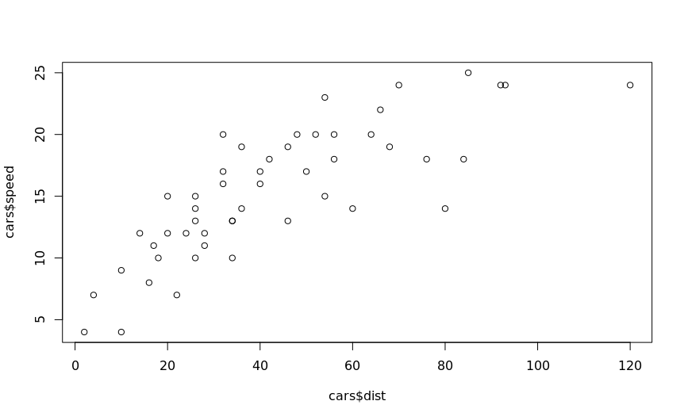
速度设为 x 轴可能更有意义，因为停止距离是速度的函数，而反过来未必。所以，本课程剩下的问题，是要相应地分配合适的参数。
你可以假设接下来的几个问题的答案都是 plot(x = cars$speed, y = cars$dist, ...)，使用各种参数代替 ...
设置 x 轴的标签为 Speed 来重新绘图。
> plot(x = cars$speed, y = cars$dist, xlab = 'Speed')
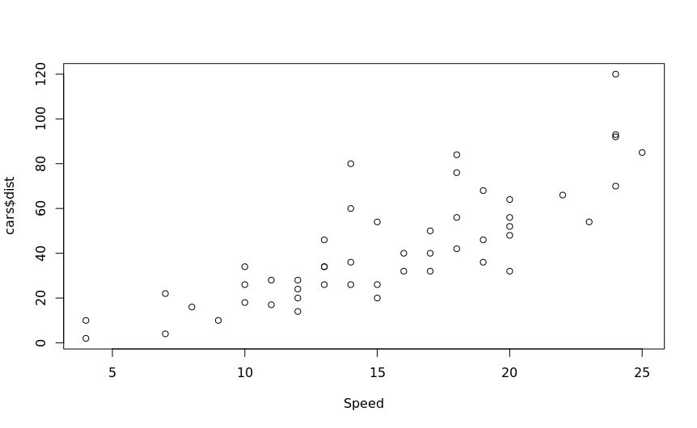
将 y 轴的标签设置为 Stop Distance。
> plot(x = cars$speed, y = cars$dist, ylab = 'Stopping Distance')
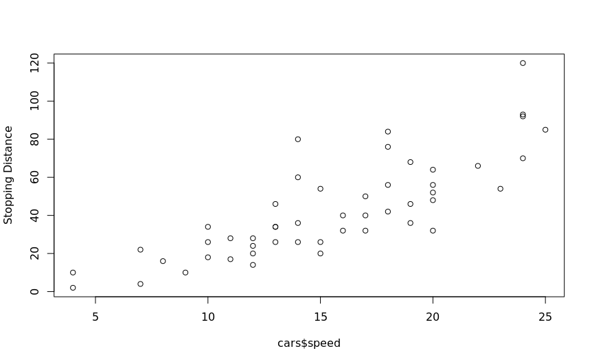
将 x 轴和 y 轴的标签分别设置为 Speed 和 Stopping Distance。
> plot(x = cars$speed, y = cars$dist, xlab = 'Speed', ylab = 'Stopping Distance')
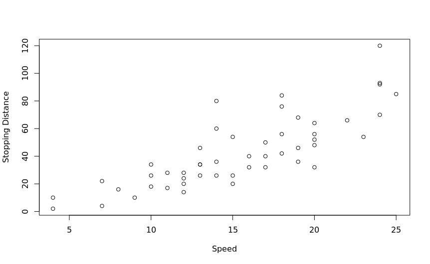
在本课程开始的时候，plot(cars) 能生效的原因是 R 最够聪明，它第一个元素（即第一列）应该赋值为 x 参数，而第二个元素赋值给 y 参数。下面可以使用 plot(cars, ...) 来简化输入，并添加各种参数。当然，我们可以只指定一个参数，也可以指定多个参数。
为图形添加标题 My Plot。
> plot(cars, main = 'My Plot')
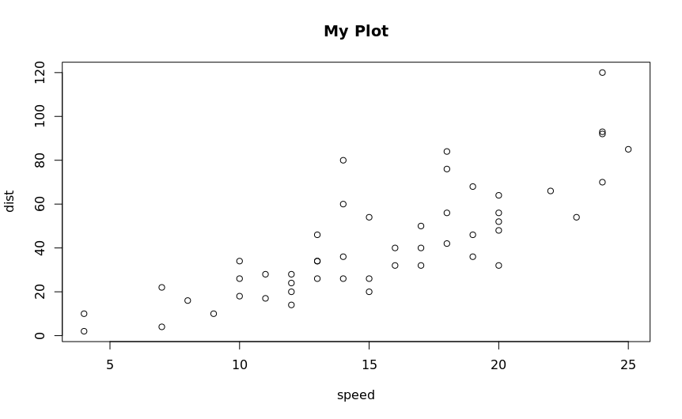
为图形添加副标题 My Plot Subtitle。
> plot(cars, sub = 'My Plot Subtitle')
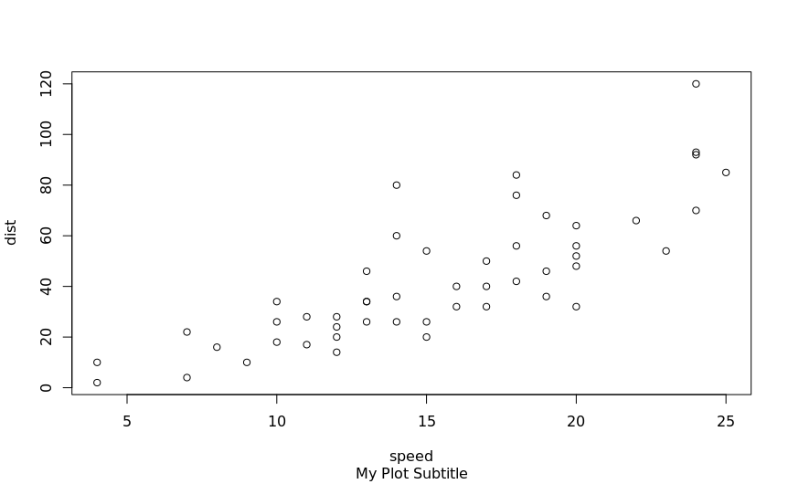
下面开始探索一些其他的选项，请查看 ?par 。让我们来看看一些更常用的选项。继续使用 plot(cars, ...) 为基础回答问题。
将图线绘制成红色。（使用参数 col = 2）
> plot(cars, col = 2)
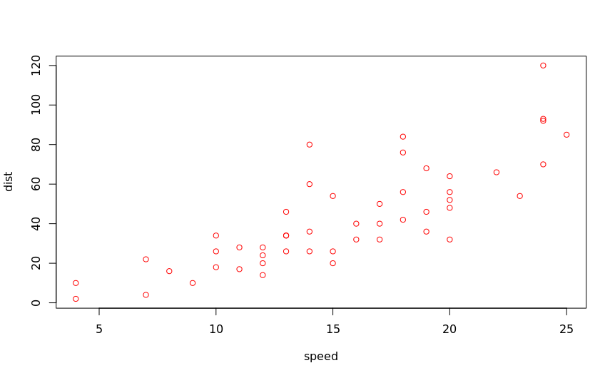
限制 x 轴的范围为 10-15 之间。（使用 xlim = c(10, 15) 来达到这个效果）
> plot(cars, xlim = c(10, 15))
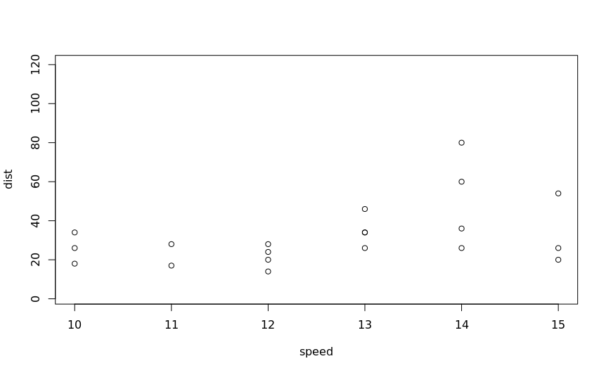
你也可以改变符号的形状，详细信息请参考 ?point。下面我们把符号改成三角形。（使用参数 pch = 2）
> plot(cars, pch = 2)
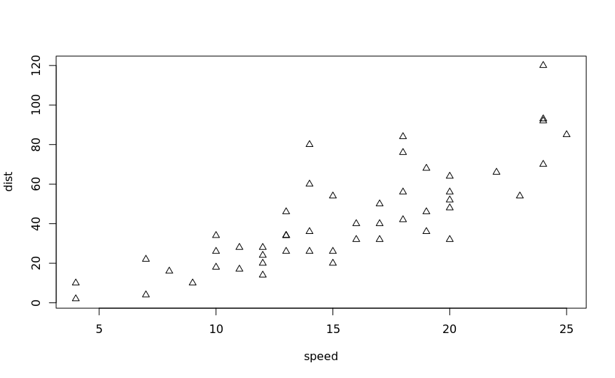
许多人现在使用更高级的包，比如 ggplot2，来创建图形。我们介绍 R 内置的绘图函数仍然是有用的，因为许多人在 lattice 和 ggplot2 中的习惯用法都是建立在它的基础上的。
现在，让我们看看基本图形中其他一些可能有用的函数，从箱型图（boxplots）开始。
载入 matcars 数据框的数据。
> data(mtcars)
每当您加载一个新的数据框时，都应该在使用之前先研究它。在之前的课程中提到，可以使用 dim() 和 head() 之类的函数。
boxplot 函数和许多 R 内置函数一样，也可以采用 formula 参数。使用 formula = mpg ~ cyl 和 data = mtcars 来创建一个 boxplot。
> boxplot(mpg ~ cyl, mtcars)
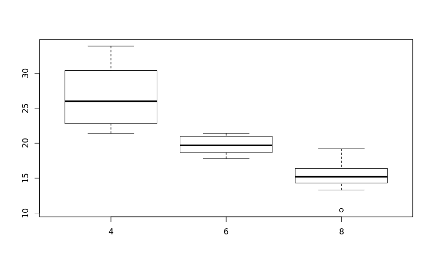
从图中可以看出，多缸车的 mpg 值要低得多。注意，我们可以使用与上面的 plot() 相同的一组参数来添加坐标轴标签，标题等等。
当观察单个变量时，直方图是一个非常有用的工具。hist() 是一个相关的 R 函数。hist() 最好的用法是只传递单个向量作为参数。
下面使用 hist() 函数和 mtcars$mpg 参数来创建一个直方图。
> hist(mtcars$mpg)
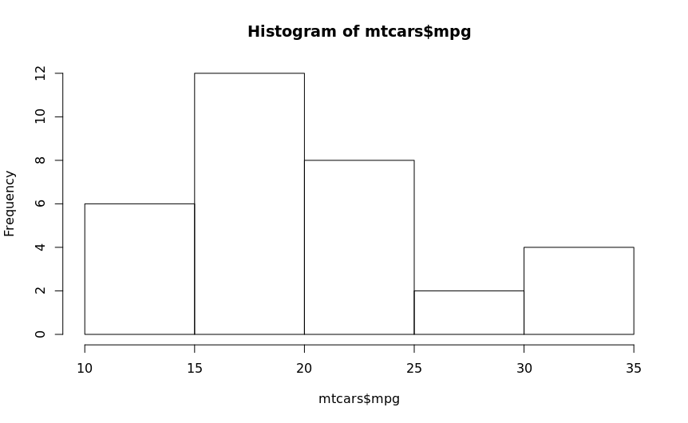
本节课，您学习了如何在 R 中绘图。下一步最好的选择是从这里开始学习 ggplot2，如果您想了解基本图形的其他元素，那么这个 页面 可以为您提供一个参考。